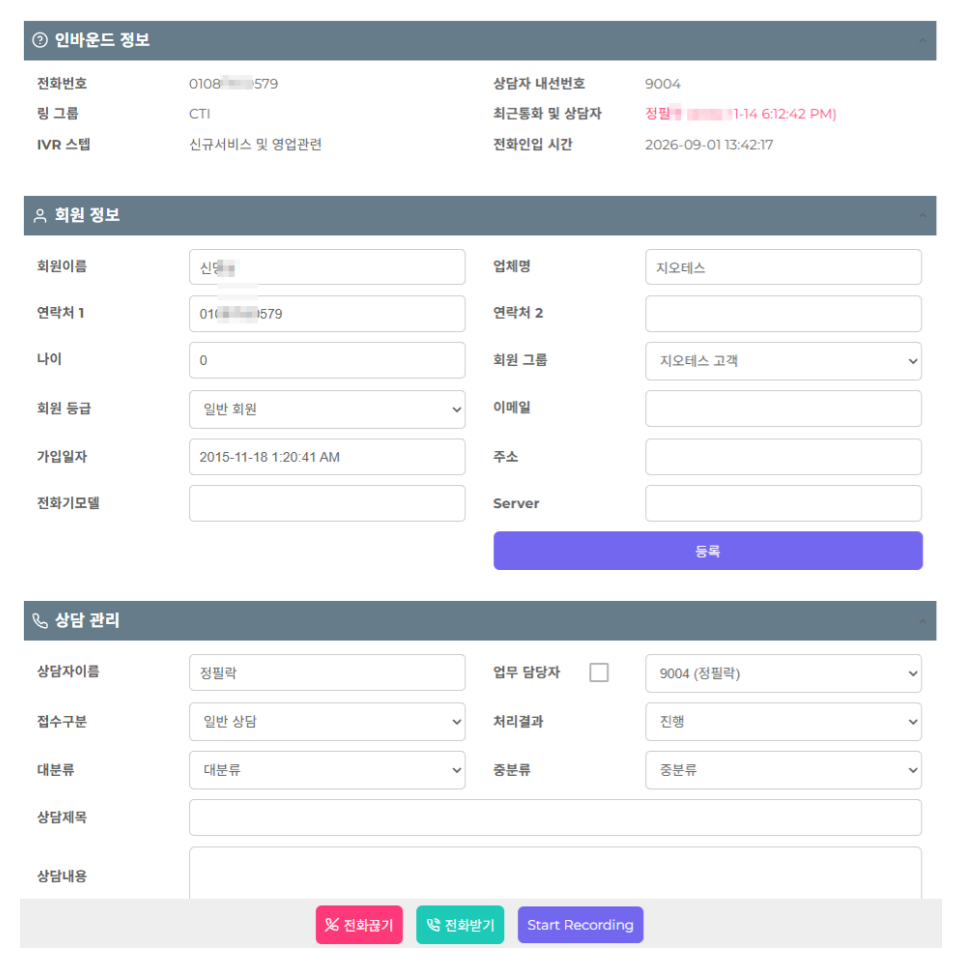

일반 CRM은 사람이 검색해서 고객을 찾습니다. 상담용 CRM은 전화가 걸려오는 순간 발신번호로 고객을 자동으로 찾아 화면에 띄웁니다. 통화가 끝나면 상담 내용이 그 고객 이력에 바로 쌓입니다. 지오테스 CRM은 교환기와 같은 회사가 만들었기 때문에 전화와 화면이 따로 놀지 않습니다.
전화가 울리는 순간 고객 정보와 지난 상담 이력이 함께 뜹니다.
누가 언제 무슨 이야기를 했는지 한 줄로 쌓입니다. 담당자가 바뀌어도 이어집니다.
관리할 항목을 업무에 맞게 추가하고 뺍니다. 쓰지 않는 칸을 억지로 채울 필요가 없습니다.
화면의 전화번호를 누르면 바로 발신됩니다. 번호를 옮겨 적을 일이 없습니다.
통화 뒤 안내 문자를 화면에서 바로 보냅니다. 예약 문자도 지정할 수 있습니다.
다시 연락할 시간을 걸어두면 그때 알려줍니다. 놓치는 콜백이 줄어듭니다.
전화가 울리는 순간 고객이 먼저 뜹니다

실제 사용 화면입니다. 표시 항목은 업무에 맞게 추가하거나 뺄 수 있습니다.
발신번호로 고객을 찾아 자동으로 띄웁니다. 성함부터 여쭤보지 않아도 됩니다. 등록되지 않은 번호는 신규 고객으로 뜨고, 통화하면서 바로 등록합니다.
등급, 가입일, 담당자, 누적 상담 건수, 처리하지 못한 건이 함께 보입니다. 말투와 응대 수위를 정하는 데 필요한 정보가 통화 전에 갖춰집니다.
시간순으로 쌓입니다. 담당자가 바뀌어도 이어집니다. 고객이 같은 설명을 두 번 하지 않게 만드는 부분이 여기입니다.
통화 상태와 경과 시간이 표시됩니다. 통화가 끝나면 이 건이 상담 이력에 자동으로 붙습니다.
주문, 접수, 예약처럼 진행 중인 건을 함께 띄웁니다. 무엇 때문에 걸었는지 대부분 여기서 짐작이 됩니다. 쓰시는 업무에 맞춰 이 칸에 무엇을 띄울지 정합니다.
전화를 받고 나서 성함을 묻고, 검색하고, 지난 내용을 찾습니다. 그 사이 고객은 기다리고, 담당자가 자리에 없으면 아무도 답을 못 합니다.
받는 순간 누구인지, 무슨 일로 걸었을지가 화면에 있습니다. 통화 한 건마다 몇십 초씩 줄고, 그게 하루 수백 통이면 사람 한 명 몫이 됩니다.
파일이 여러 벌로 갈라지고, 누구 버전이 최신인지 모르게 됩니다.
그 사람이 자리를 비우면 아무도 답을 못 합니다.
전화할 때마다 처음부터 다시 이야기하게 만들면 불만이 쌓입니다.